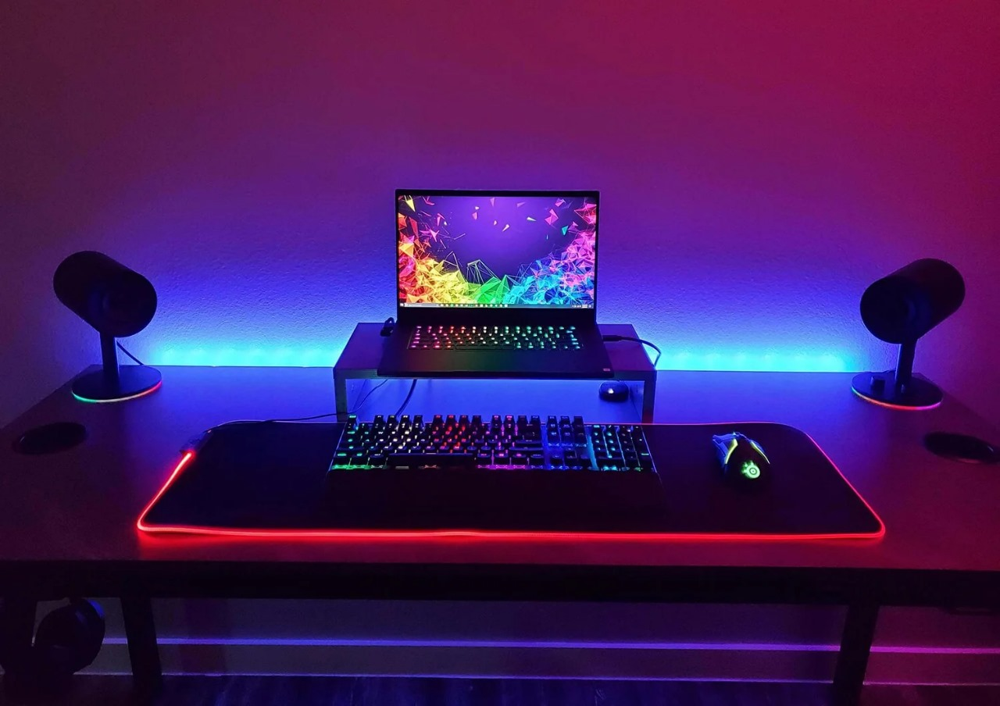
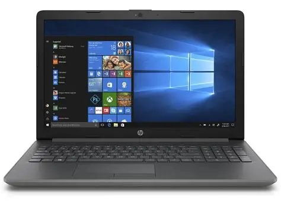

About This Blog
This blog is all about laptops. Here, you will find tips on how to improve laptop speed, the best laptops
for students, details about gaming laptops, and insights into the future of laptops.
1️⃣Best Laptop for Students and Office Work

★For students and office users, a lightweight and affordable laptop is the best choice. Models like HP
Pavilion, Dell Inspiron, and Lenovo IdeaPad are perfect for studying, assignments, and daily tasks. Long
battery life and portability are their strong points.
Read more blog
Best Laptop for Students and Office Work
★Students and office users need a laptop that is lightweight, reliable, and affordable. Picking something with good battery life, a sharp display, and comfortable keyboard can make daily tasks easier. Everyday models from HP Pavilion, Dell Inspiron, and Lenovo IdeaPad deliver great value for money without compromising build quality. Prioritize portability and functionality—they’ll matter more than flashy raw power for regular use.
2️⃣ Gaming Laptops

★When choosing a laptop for gaming, a fast processor, high RAM, and a dedicated graphics card are the most important features. ASUS ROG, MSI, and Alienware laptops are specially designed for gaming. These laptops can smoothly run heavy games and graphics-intensive software.
Read More Blog
🎮 Gaming Laptops
★Gaming laptops are designed for high performance and smooth gameplay. They usually come with powerful processors, large amounts of RAM, and dedicated graphics cards that can handle heavy games and creative software. Popular brands like ASUS ROG, MSI, and Alienware are built specifically for gamers, offering features such as RGB keyboards, advanced cooling systems, and high-refresh-rate displays. If you are passionate about gaming or video editing, investing in a gaming laptop ensures speed, reliability, and an exciting overall experience.
3️⃣ Why HP Laptops Are a Good Choice

★HP laptops are well-known for durability and reliable performance. They come in stylish designs and offer a wide range of prices for all types of users. Whether you’re a student, professional, or business user, HP is a balanced and trusted option.
Read more blog
Why HP Laptops Are a Good Choice
★HP laptops are a popular choice because they combine performance, design, and reliability. They are available in different price ranges, making them suitable for students, professionals, and everyday users. HP also offers excellent battery life and durable build quality, so the laptops can handle both work and entertainment. Whether you need a budget-friendly option or a high-performance machine, HP provides laptops that are dependable and long-lasting.
4️⃣ How to Improve Laptop Speed

★A slow laptop can be frustrating while working. To improve speed, uninstall unnecessary programs, disable startup apps, and keep your hard drive clean. If possible, upgrading RAM and installing an SSD are the most effective ways to boost performance.
Read more blog
⚡ Extra Tips to Improve Laptop Speed
- Disable Startup Programsol
-
★Many apps start automatically when you turn on your laptop. Disable the unnecessary ones from Task Manager > Startup.
- Clean Temporary Files
-
Open Run > %temp% and delete temporary files to free up space and improve speed.
- Turn Off Visual Effects
- Too many animations slow down the system. Go to System Properties > Performance > Adjust for best performance.
5️⃣ Future of Laptops

★The future of laptops is smarter and more powerful. AI technology, foldable screens, and longer battery life are already trending. In the coming years, laptops will be lightweight, cloud-based, and more energy-efficient..
Read more blog
Future of Laptops
★The future of laptops is moving toward faster performance, slimmer designs, and more powerful features. Upcoming laptops will focus on longer battery life, foldable or dual screens, and advanced processors that support AI technology. These improvements will make laptops not only lighter and more portable but also smarter, helping users with studies, office work, and creative projects. In the coming years, laptops will become even more connected and efficient, making them essential tools for everyday life.🔹 Ending Note
★This blog provides detailed information about laptops. Our goal is to give readers the best guidance and the latest technology updates. Stay connected for more tips and tricks!